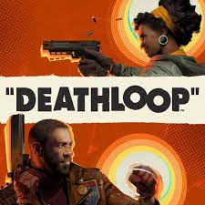
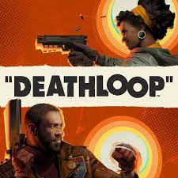

Made by Matthew Jennings Made at John Ferneley Collage

facebook:~~~~~~~ instagram:~~~~~~~~ email:~~~~~~~~~~

 


This is easily one of the greatest games that I have played over the course of 30 years of gaming. I love Japanese culture and Japanese history, especially, in the broadest of terms, Feudal Japan. I have always found the Samurai caste to be alluring in their code of Bushido. Not to mention several other reasons, but I'll focus on the game here.Sucker Punch really struck a great balance here, perhaps nearly perfect between keeping Jin and the Samurai in general, as grounded as possible whilst also striking those chords of these fierce warriors in a near perfect way they have become to be romanticized by literature and pop culture.It really is an amazing game you should truly play this amazing game. |
Played well over 250 games and this is by far the BEST companion Rpg game ever played. Fantastic constant talking, bickering name calling and popping jokes from all Chars all throughout the many chapters offered. Graphics are second to none even on my Ps4Pro so next Gen be supernatural, so immersive and vibrant all the worlds visited is quite extraordinary and hats off to the people involved Kudos. Sound track literally the best music from the best era just head bopping while kicking fluff outa everything priceless!!. |
DEATHLOOP (PlayStation 5) is my pick for the BEST fps of 2021 and is in my top 3 for best games released in 2021 (along with R&C rift apart & Psychonauts 2. It's got an intricate story & a loop that gets better and even more bombastic the more you play! It's very well done, the story is good but the GAMEPLAY is top notch. You can choose to attack visionaries anyway you see fit; if you'd like to take it slow & stealthy it allows you to excel at stealthy gameplay. If you want to run & gun the game allows you to do so in style, with dual wield weapons, shotguns and even snipers you can shoot your way through anything! |
Made by Matthew Jennings Made at John Ferneley Collage
facebook:~~~~~~~ instagram:~~~~~~~~ email:~~~~~~~~~~